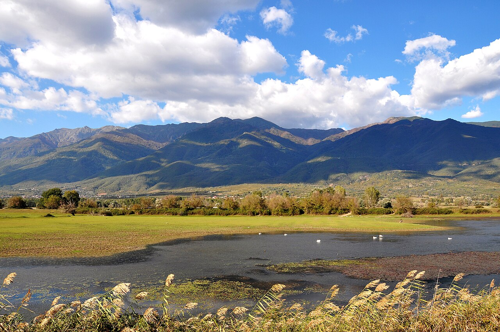

📍 Σέρρες, Μακεδονία | 📍 Υψόμετρο: ~35μ.
✨ Ένας από τους σημαντικότερους και ομορφότερους Υδροβιότοπους της Ευρώπης.
- 🚣♂️ Προσφέρεται για μοναδικές εμπειρίες εξερεύνησης με βάρκα (πλάβα), καγιάκ & ποδηλασία.
- 📸 Ιδανικός προορισμός για Φωτογραφία Φύσης & Άγριας Ζωής.
- 🦩 Παράδεισος για birdwatching με εκατοντάδες είδη σπάνιων πουλιών.
- 🐃 Φυσικό καταφύγιο του μεγαλύτερου πληθυσμού νεροβούβαλων στην Ελλάδα.